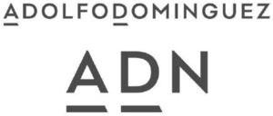

Trade Mark Journal No.2025/012 21 March 2025
WO0000001843269 (3)
Office of origin: Spain
Date of International Registration:26 December 2024
Date of designation in the UK:
26 December 2024

International priority date claimed: 14 November 2024
(Spain)
(4291863)
- Class 3
- Non-medicated cosmetics and toiletry preparations; perfumery, essential oils; fragrances for personal use; eau de Cologne; eau de parfum; eau de toilette; scented water; perfumes; extracts of perfumes; nonmedicated body care and cleansing preparations; non-medicated body lotions, milks and creams; deodorants for personal use; antiperspirants for personal use; non-medicated soaps; nonmedicated soaps for personal use; non-medicated soaps in liquid, solid or gel form for personal use; non-medicated bath gel; non-medicated shower gel; non-medicated bath preparations; nonmedicated bath salts; non-medicated skin care preparations; exfoliants; talcum powder, for toilet use; perfumed powders; wipes, cotton and cloths impregnated with non-medicated cosmetic lotions and for perfuming; non-medicated cosmetics, nonmedicated toiletries and perfumery for the care and beauty of the eyelashes, eyebrows, eyes, lips and nails; non-medicated lip balm; nail polish; nail polish removers; adhesives for cosmetic use; nonmedicated cosmetic preparations for slimming purposes; non-medicated hair preparations and treatments; non-medicated shampoos; makeup products; make-up removing products; nonmedicated shaving preparations; non-medicated pre-shaving preparations; non-medicated aftershave preparations; non-medicated beauty preparations; non-medicated cosmetic sun-tanning and self-tanning preparations; cosmetic kits primarily containing mascara, eye shadows, eye pencils, blushers, lipsticks, eyebrow pencils, make-up, foundation and lip glosses; household fragrances; incense; aromatic potpourris; scented wood; products for perfuming linen; aromatic extracts.
Adolfo Dominguez, S.A.
Representative: ELZABURU, Edificio Torre de Cristal,, Paseo de la Castellana, 259C, planta 28, E-28046 Madrid, SPAIN